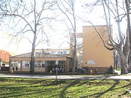
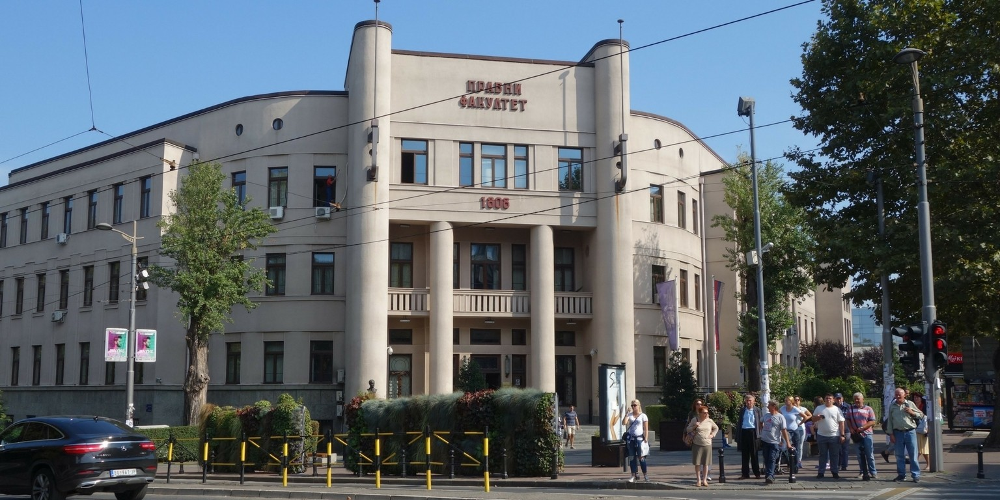
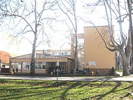
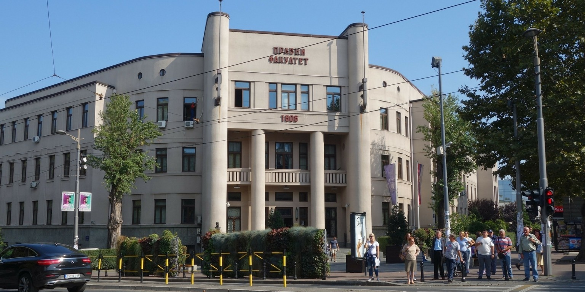
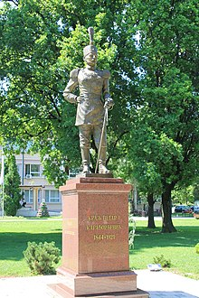
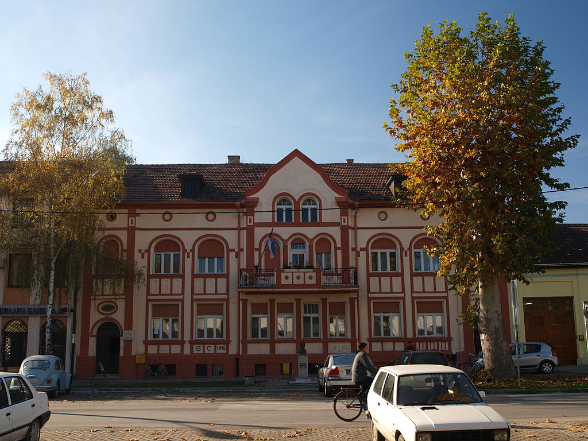

Ime i prezime
Odeljenje:
Adresa:
Brpj telefona
osnovno:OS"Sveti Sava"
srednje:"Gimnazija 20.oktobar"
buduce:pravni fakultet
 



Бачка Паланка је градско насеље у Србији, у општини Бачка Паланка, у Јужнобачком округу. Према попису из 2011. било је 28239 становника.На основу археолошких налаза и писаних докумената доказано је да су на овим просторима људи живели непрекидно од праисторије до данас. Прва насеља се подижу у XI веку, а назив Паланка се помиње 1593. године.  Од XI века на овим просторима живели су Угари и Срби (што потврђују словенски српски топоними: Велики и Мали Гајиц, Голубњак, Рајково, Ристићев пут, Урошка бара итд). 